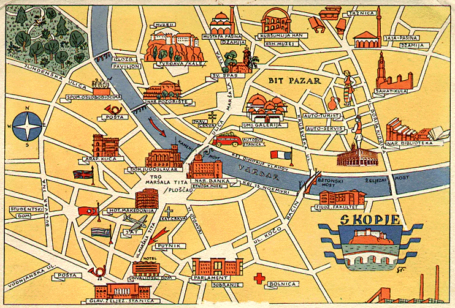
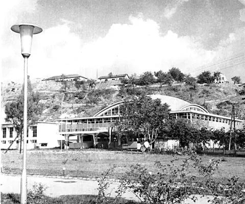

Antiguo mapa de orientación
38 lugares de interés en el antiguo plano de Skopie. Toque o haga clic en un punto para ver la foto.


Casa árabe

Puente de hormigón

Bit Pazar

La oficina central de correos

Hospital municipal

Playa urbana

Hammam de Daut Pachá

Puente de madera

Puente de hierro

Estación de ferrocarril

Hogar de inválidos

Puente de piedra

Iglesia católica

Kuršumli An

Mezquita de Mustafa Pachá

Banco Nacional

Biblioteca Nacional

Casino de Oficiales

Parque

Plaza Makedonija

Plaza de la Libertad

Correos 2

Torre del Reloj


Recinto ferial


San Demetrio

Sveti Spas

Asamblea de Macedonia

Monumento a los combatientes caídos

La antigua calle principal

Residencia de estudiantes

La fortaleza Kale

Teatro

Calle Kočo Racin

Calle 11 de Octubre

Facultad de Filosofía

Hotel Makedonija
Panorama